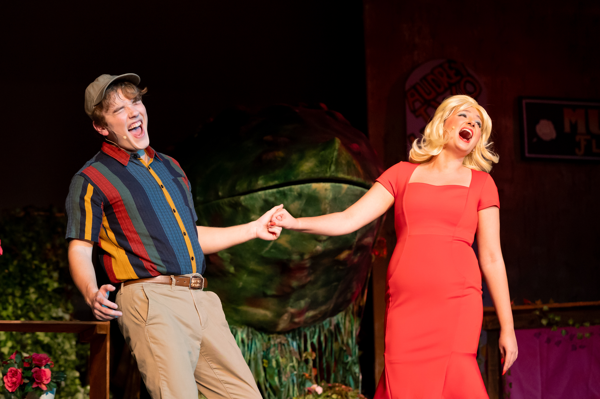

Portfolio Gallery
A picture can tell a thousand words.
Hello, I am Kirsten! I am a photographer who takes colorful and emotion-evoking photos. The photos below are CUW theater photos I took featuring Cinderella Jr., Where The Light Gets In (student-made play), Twelfth Night, and Little Shop of Horrors.